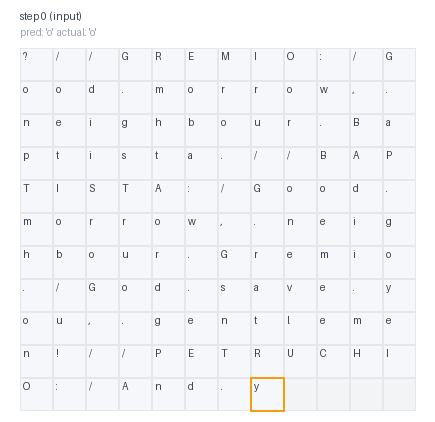
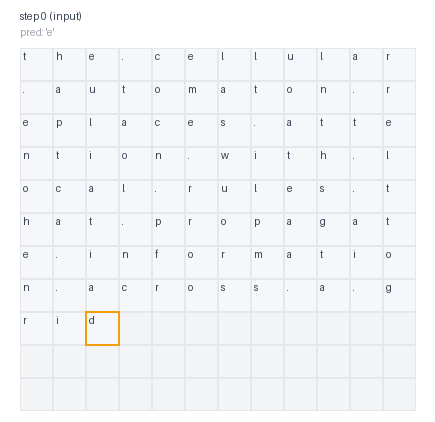
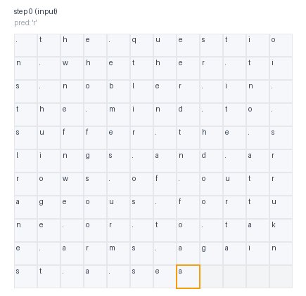

Replacing transformer attention with a learned cellular automaton. Subquadratic, visually interpretable, and surprisingly competitive.
Transformers process language by letting every token attend to every other token. It works well, but costs O(n²) per layer.
We asked: what if reasoning happened through local interactions instead? Take your token embeddings, lay them out on a 2D grid, and apply a learned local update rule (a small neural network that each cell runs based only on itself and its neighbors). Repeat for k steps. Information propagates outward. Context emerges. Then read out the grid as contextualized representations.
This is a Neural Cellular Automaton used as the core reasoning mechanism of a language model. Nobody had tried this before.
Instead of thinking in one big step, the model runs a little simulation inside itself, and the answer emerges from simple rules interacting. Like Conway's Game of Life, but the rules are learned.
The transformer baseline is standard: token embedding, position embedding, 4 causal self-attention blocks, per-position vocabulary head. Complexity: O(n²·d) per layer.
The CA model replaces all attention layers. Token embeddings are packed onto a 2D grid (row-major). A learned 3×3 masked convolution runs for k steps. Each step: normalize, perceive neighbors, GELU, project, residual. The grid is unpacked back to a sequence and fed to the vocabulary head. Complexity: O(n·d²) per step.
Causality is enforced by masking the convolution kernel so each cell can only read from earlier positions in the sequence (row-major order). We verified this formally: changing any future token produces zero change in logits at earlier positions.
def forward(self, grid):
update = self.norm(grid)
weight = self.perception.weight * self.kernel_mask
update = F.conv2d(update, weight=weight,
bias=self.perception.bias,
padding=self.padding,
dilation=self.dilation)
update = F.gelu(update)
update = self.update(update)
update = self.dropout(update)
return grid + update
Each CA step is a local convolution: O(n) in sequence length for a fixed kernel size. On a 2D grid of √n×√n cells, full propagation takes ~√n steps.
| Model | Cost per forward pass | Scaling in n |
|---|---|---|
| Attention | O(n² · d) | Quadratic |
| CA (fixed k) | O(k · n · d²) | Linear |
| CA (full coverage) | O(n3/2 · d²) | Subquadratic |
In practice with k=8, the CA is strictly linear in n. The benchmarks confirm the crossover around 512 tokens. By 1024 tokens the CA is 2.7× faster.
Because the CA operates on a 2D grid, we can visualize how much each cell's state changes at every step. Blue means a cell was heavily updated by its neighbors. Light means it stayed still. You're watching information propagate through the grid in real time.



No other language model architecture gives you this. Attention is a set of dot products in high-dimensional space. A CA is spatial. You can watch patterns form.
Both models trained with the same parameter count, same data, same optimizer. 3 seeds per configuration. Lower BPC is better.
| Dataset | Match | Rule | CA BPC | Transf. BPC | Δ |
|---|---|---|---|---|---|
| text8 | Param | Shared | 3.10 ± 0.01 | 3.40 ± 0.00 | −0.29 |
| Shakespeare | Param | Shared | 3.53 ± 0.01 | 3.77 ± 0.01 | −0.24 |
| text8 | Step-time | Unshared | 3.27 ± 0.05 | 3.40 ± 0.00 | −0.13 |
| text8 | Step-time | Shared | 3.33 ± 0.02 | 3.40 ± 0.00 | −0.07 |
| Shakespeare | Param | Unshared | 4.28 ± 0.01 | 3.77 ± 0.01 | +0.51 |
| Shakespeare | Step-time | Unshared | 3.88 ± 0.02 | 3.77 ± 0.01 | +0.11 |
Training step time (forward + backward) on an RTX 3060, step-time-matched configuration. The transformer scales quadratically; the CA stays roughly linear.
| Context | Transf. ms | CA ms | Speedup | Transf. Mem | CA Mem |
|---|---|---|---|---|---|
| 128 | 16 | 18 | 0.9× | 139 MB | 114 MB |
| 256 | 28 | 28 | 1.0× | 251 MB | 187 MB |
| 512 | 75 | 52 | 1.4× | 481 MB | 351 MB |
| 1024 | 241 | 89 | 2.7× | 938 MB | 648 MB |
All parameter-matched against the same transformer (3.77 BPC) on Tiny Shakespeare, 3 seeds each.
The most important choice. Sharing one rule across all steps lets the model have a wider hidden dim for the same parameter budget.
| Sharing | CA BPC | Δ |
|---|---|---|
| Shared | 3.53 | −0.24 |
| Unshared | 4.28 | +0.51 |
Fewer steps = fewer rule modules (unshared) = wider hidden dim when parameter-matched.
| Steps | CA BPC | Δ |
|---|---|---|
| 4 | 3.95 | +0.17 |
| 8 | 4.28 | +0.51 |
| 12 | 4.49 | +0.72 |
The 1D tape layout beats the 2D grid for unshared CA. Sequential locality matters for language.
| Layout | CA BPC | Δ |
|---|---|---|
| tape_1d | 3.62 | −0.14 |
| row_major_2d | 4.29 | +0.53 |
| Neighborhood | CA BPC |
|---|---|
| 3×3 masked | 4.29 |
| 3×3 dilated | 4.35 |
| 5×5 masked | 4.74 |
All modes perform similarly. The CA is robust to position encoding choice.
| Mode | CA BPC |
|---|---|
| Grid only | 4.25 |
| Both | 4.28 |
| Sequence only | 4.28 |
Synthetic tasks requiring exact long-range lookups. The CA trails the transformer on all four, which is expected for a local model with fixed k steps.
| Task | Transf. BPC | CA BPC | Δ |
|---|---|---|---|
| Copy | 2.92 | 3.21 | +0.29 |
| Delayed copy | 2.31 | 2.77 | +0.45 |
| Brackets | 2.01 | 3.08 | +1.07 |
| Induction | 2.58 | 3.75 | +1.17 |
With 8 CA steps and a 3×3 kernel, information travels at most ~24 cells. Bracket matching and induction heads need exact long-range lookups that attention handles trivially. Future directions: hierarchical CA, learned skip connections, or lightweight attention hybrids.
The CA works. On natural language (Shakespeare, text8), the shared-rule CA beats a parameter-matched transformer by up to 0.29 BPC.
Scaling is the advantage. At 1024 tokens, the CA is 2.7× faster and uses 31% less memory. The gap grows with sequence length.
Design choices matter. Shared rules beat unshared. 1D tape can beat 2D grid. 3×3 kernels beat 5×5. None of this is obvious without ablation.
Long-range is the open problem. The CA struggles on tasks requiring exact distant lookups. This is the clearest direction for future work.
You can watch it think. No other language model architecture gives you spatial, step-by-step visualization of the reasoning process.
Neural Cellular Automata (Mordvintsev et al., 2020) showed CA rules can be trained with backprop. ViTCA (NeurIPS 2022) replaced global attention with iterative local steps for vision. State space models (Mamba, S4) share the motivation of linear-cost local recurrence.
No prior work uses learned CA steps as the core reasoning mechanism inside a language model. We're the first to show this is competitive, benchmark it systematically, and prove strict causality on a 2D grid.
# Install and run tests python3 -m pip install -e . python3 -m unittest discover -s tests -v # Train a CA model python3 -m ca_reasoning.train \ --model ca --data-path data/tinyshakespeare.txt \ --download-dataset --rule-sharing shared \ --ca-steps 8 --hidden-dim 104 \ --save-checkpoint checkpoints/ca.pt # Watch it think python3 -m ca_reasoning.visualize \ --checkpoint checkpoints/ca.pt \ --prompt "To be, or not to be"
Runs on a single consumer GPU. Most experiments finish in minutes.